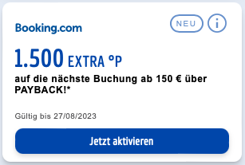

Cartões de Crédito na Alemanha

A Alemanha é conhecida mundialmente por ser um dos poucos países desenvolvidos que ainda utiliza
dinheiro vivo para a maioria esmagadora dos pagamentos diários.
Como você deve imaginar, a utilização de cartões de crédito não é muito comum, embora existam
varias opções, mas raramente se tem muitos benefícios como em outros países.
Depois várias semanas pesquisando esse assunto, a tabela acima foi criada como uma referência visual mais completa, baseada totalmente nos meus próprios critérios de notas, voltados a viagem.
Items importantes nos critérios de avaliação dos cartões:
- Programa de Milhas / Pontos (ou cashback)
- Seguros viagem inclusos: Cancelamento de voo, atraso de voo, extravio de bagagem, cancelamento da viagem por motivo de doença, cobertura para locação de carros.
- Valor da anuidade
- Taxa para uso em moeda estrangeira
- Benefícios adicionais
Alguns pontos importantes em relação aos cartões Amex:
- A aceitação na Alemanha é bem baixa, e embora seja um pouco melhor em outros países europeus, mas ainda assim não chega nem perto de Visa e Mastercard.
- Não é viável ter apenas um cartão se ele for Amex, é mandatório ter um segundo cartão.
- O cartão Platinum é o melhor cartão sem sombras de dúvida, e é possível pegar algumas promoções com Bônus de Boas-Vindas que praticamente pagam um viagem intercontinental.
- A anuidade do Platinum assusta de primeira, mas existem muitos benefícios e bônus "em dinheiro", que reduzem (virtualmente) o valor da anuidade se você realmente utilizar todos os bônus.
- Se você preferir outro modelo de cartão Amex, o Gold tem um bom custo x benefício. Ou o American Express Card, também conhecido como Green, que é mais barato que o Gold, somente com menor cobertura de seguros viagem.
 Eu recomendo fortemente todo mundo ter pelo menos o cartão
Amex Payback
que é gratuito.
Eu recomendo fortemente todo mundo ter pelo menos o cartão
Amex Payback
que é gratuito.
Somando com todos os bônus possíveis do Payback, mais a transferência bonificada que ocorre todo ano, mais o pacote Amex Max que dobra o número de pontos por cada 2 EUR, esse cartão é a melhor opção para acumular pontos que viram milhas Miles & More. [link de referência]-
Ative o Amex Turbo/Max, que é um recurso adicional, pago, que aumenta q quantidade de pontos por cada 2 EUR gastos,
melhorando muito sua acumulação de pontos.
Verifique no site da American Express o valor atual para ativação dessa funcionalidade, pelo menos para o Amex Payback, o valor era 30 EUR por ano.
O maior benefício e grande diferencial da American Express para qualquer outro cartão Visa ou Mastercard, é o
programa do pontos Membership Rewards ®.
Esse programa oferece transferência direta de pontos MR da Amex para vários programas de fidelidade
e redes hoteleiras. Não tem nenhuma outra opção disponível na Europa que chegue perto disso.
Ter essa flexibilidade é fundamental para todo viajante que quer poder optar pelas melhores ofertas e rotas,
independentemente da cia aérea e programa de fidelidade.

Você pode solicitar qualquer um dos cartões Amex usando nosso [link afiliado].
Se você estiver pensando em assinar qualquer outro cartão Amex que não seja o Payback, NÃO assine o Payback antes!
É preciso esperar 18 meses para ser elegível a receber os Bônus de Boas-Vindas se você já tiver um cartão Amex.
Quais outros cartões valem a pena?
 Como é possível ver na tabela de notas acima, o cartão
Eurowings Premium
foi o que teve maior pontuação em cada item analisado.
Como é possível ver na tabela de notas acima, o cartão
Eurowings Premium
foi o que teve maior pontuação em cada item analisado.
Ele gera milhas Miles & More, válidas por 36 meses, tem uma cobertura de seguros excelente,
ao mesmo nível que o Amex Platinum, não tem taxas extras para uso com moedas estrangeiras,
e tem alguns poucos benefícios extras caso você utilize a Eurowings alguma vez na vida.
O cartão é emitido pelo banco Barclays, e é bem flexível em relação a pagamentos adiantados e até
parcelamento sem juros.
Caso um pacote de seguros um pouco menos completo já lhe sirva, o Eurowings Classic é a melhor opção para gerar milhas Miles & More e ainda tem alguns pequenos benefícios extras. Ele é mais barato que o Miles & More Card, mas tem a desvantagem das milhas expirarem a cada 36 meses.
Não necessariamente para utilizar o cartão, mas vale muito mesmo a pena ter uma conta no Revolut
para adicionar dinheiro utilizando seu cartão de crédito Visa/Mastercard, pontuando como uma transação normal,
e usar esse valor para pagar suas contas fixas via transferência bancária (SEPA), como aluguel,
energia, internet, etc.
Use o
[link afiliado] para abrir sua conta.
Se você pretende usar seu cartão para adicionar dinheiro em uma conta Revolut, esqueça os cartões Eurowings, já que o banco Barclays não considera transações no Revolut e Wise, válidas para gerar milhas.
Cartão Payback
Independente do cartão de crédito que você venha a requisitar futuramente, como já recomendado acima, ter um cartão Payback
é realmente essencial na Alemanha, diria mais, que é essencial em qualquer país onde o Payback atua.
O Payback tem mais de 600 lojas parceiras, fazendo dele um dos maiores programas de pontos (e descontos) da Europa.
Os pontos Paybacks podem ser convertidos para milhas Miles & More com paridade de 1:1. Um dos maiores benefícios do Payback são os cupons que multiplicam os pontos ganhos em cada compra. Como provavelmente você vai utilizar supermercados, farmácias, DM e outras lojas e sites como a Amazon, afiliadas ao Payback, não ter pelo menos um cartão de pontos, é deixar de acumular milhas "de graça".
 Efetivamente, a maneira mais eficiente de se acumular milhas Miles & More na Alemanha é utilizando:
Efetivamente, a maneira mais eficiente de se acumular milhas Miles & More na Alemanha é utilizando:
Payback + Amex Payback Card com a função Turbo/Max ativada e fazendo as transferências bonificadas oferecidas pelo Payback
(não confundir com as transferências automáticas que NÃO devem ser utilizadas).
Esse setup é matematicamente imbatível. O ponto negativo é que você vai obrigatoriamente precisar de um segundo cartão
Visa ou Mastercard, principalmente para ter benefícios de seguro viagem e acumular pontos onde cartões Amex não são aceitos.
O Payback tem dois tipos de cartões disponíveis na Alemanha:
- Cartões co-branded: Cartões de fidelidade, apenas para acumular pontos e não tem função nenhuma para pagamentos. Você pode solicitar um cartão Payback e escolher entre mais de 30 parceiros do Payback para ser o emissor do seu cartão. Entre eles, DM, C&A e Rewe. Eles funcionam exatamente da mesma maneira, basicamente só muda a "cara" do cartão. Use o [link afiliado] para solicitar o seu.
- Cartão de Crédito: Cartão emitido pela American Express, gratuito, sem anuidade, que acumula pontos Payback mesmo em lojas não participantes. Use o [link afiliado] para solititar o seu.
Dicas de uso do Payback
-  Se você for requisitar um cartão Amex Payback, tenha em mente que você precisa aguardar 18 meses para ser elegível para receber qualquer bônus de Boas-Vindas em outros cartões American Express. Case esteja planejando solicitar qualquer um dos outros cartões Amex, mas ainda está em dúvida, melhor aguardar um pouco e não "queimar" sua chance de bônus de Boas-Vindas porque você solicitou o Amex Payback muito recentemente.
- Os cupons disponíveis no aplicativo, são quase sempre personalizados e podem ser diferentes entre contas, então é comum ter cupons na sua conta que não estão disponíveis em outras contas que você compare.
- Tenha contas diferentes para você e seu/sua parceiro/parceira e até filhos. Como os cupons são individuais, tendo contas separadas vocês terão uma variedade maior de cupons e promoções disponíveis.
- Centralize as transferência dos pontos numa única conta Miles & More. Se você tiver contas diferentes para seus familiares, os pontos podem ser transferidos para qualquer conta Miles & More, apesar o número é informado e não precisa estar no mesmo nome do titular da conta Payback.
- NÃO ative a transferência automática pro Miles & More, aguarde as promoções de transferências bonificadas que acontecem no fim do ano e às vezes no meio do ano também.
- Você pode combinar cupons de assinatura de serviços como TV, streaming, etc, com os benefícios de cartões como Amex Platinum que oferecem reembolso nesses serviços até um limite de valor. (verifique as condições na Amex antes de comprar os cupons)
- Alguns cupons grandes de 20x, 30x, ficam disponíveis nos aplicativos do Rewe e da DM diretamente, tenha esses dois aplicativos instalados também, e fique de olho em cartões "vale presente" de lojas que você possa usar num futuro próximo, como Adidas, Apple, Amazon, Aral, etc, que geralmente pagam grandes bônus.
- Lembre-se de aceitar o uso de cookies quando for fazer compras online usando os links por dentro do site do Payback.
- Pontos extras ganhos reservando hotel no Booking.com, são geralmente creditados apenas entre 40 e 60 dias após a data de checkout. Fique atendo/atenta as regras para não achar que perdeu seus pontos.